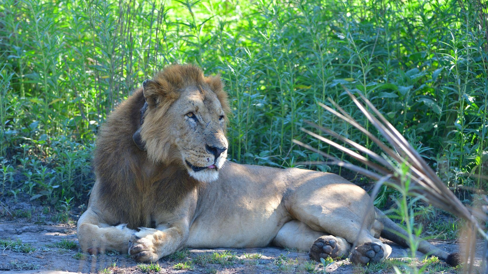
01
Leão
Panthera leoPredador de topo e uma das espécies mais emblemáticas da fauna moçambicana.
Ver detalhes →Conheça espécies de elevada importância ecológica, turística e económica para Moçambique.
Explorar espécies ↓A Administração Nacional das Áreas de Conservação, IP (ANAC, IP) é responsável pela administração e gestão das áreas de conservação em Moçambique, promovendo a conservação da biodiversidade, a proteção da fauna e flora e o uso sustentável dos recursos naturais.
A fauna bravia constitui um importante activo do capital natural do país, desempenhando funções essenciais para o equilíbrio dos ecossistemas e contribuindo para o desenvolvimento do turismo de natureza, actividades cinegéticas regulamentadas, geração de receitas, criação de emprego e oportunidades económicas para as comunidades locais.
Neste contexto, espécies como o leão, leopardo, rinoceronte, elefante, búfalo, impala, dugongo e raias assumem particular importância pelo seu valor ecológico, turístico e económico.
Selecione uma espécie para consultar a descrição, função ecológica, áreas de ocorrência e valor.

Predador de topo e uma das espécies mais emblemáticas da fauna moçambicana.
Ver detalhes →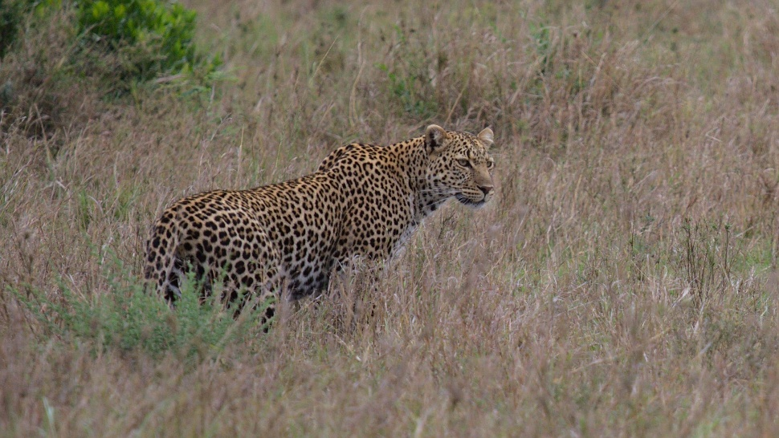
Grande predador de elevada importância para a conservação da biodiversidade.
Ver detalhes →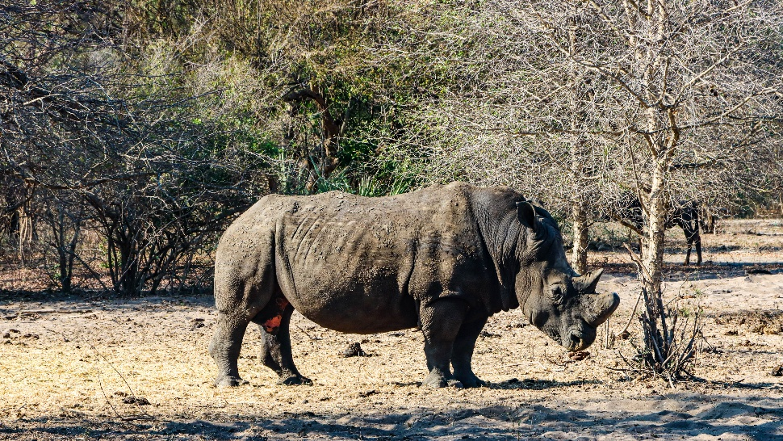
Espécie emblemática associada a savanas, pradarias e bosques abertos.
Ver detalhes →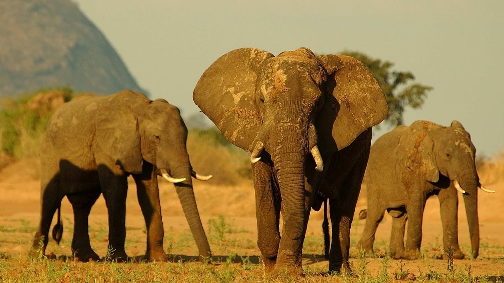
Engenheiro do ecossistema e uma das espécies mais emblemáticas de Moçambique.
Ver detalhes →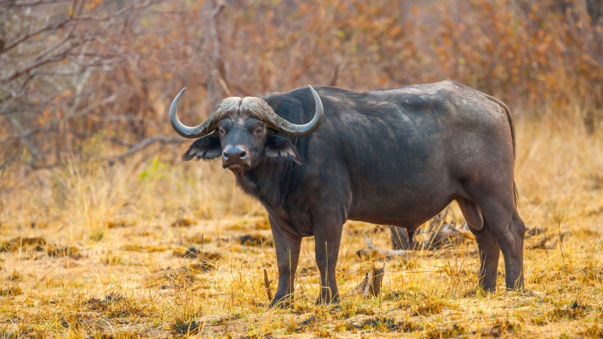
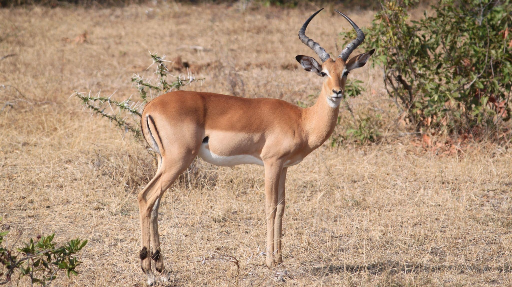
Antílope de médio porte com papel importante nas cadeias alimentares.
Ver detalhes →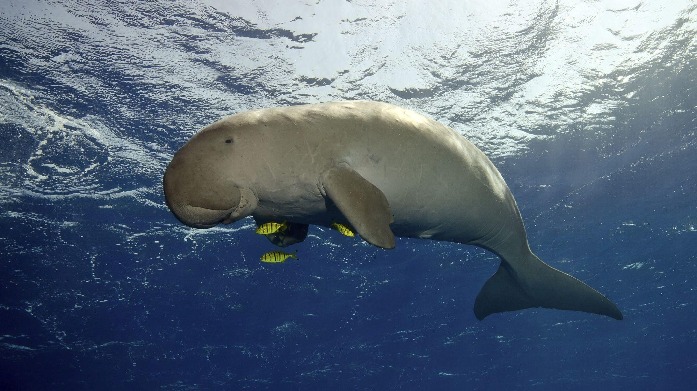
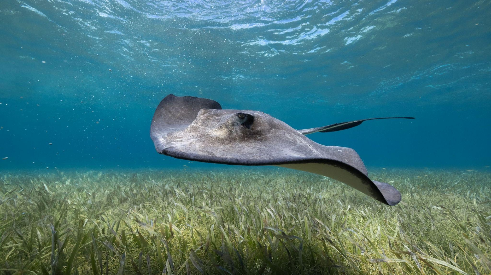
Dados apresentados no documento FACIM 2026 para elefantes, búfalos e impalas.
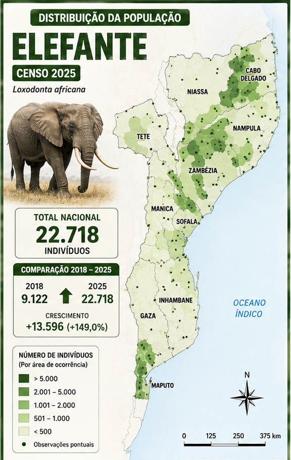
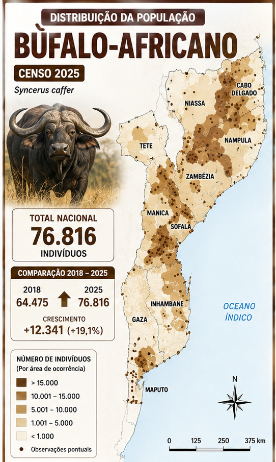
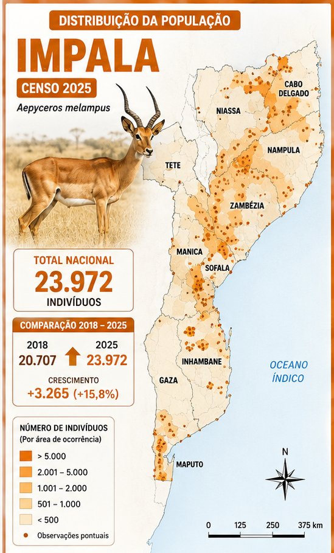
Predadores, herbívoros e espécies marinhas desempenham funções na regulação das populações, dinâmica da vegetação, cadeias alimentares e manutenção dos habitats.
A fauna em destaque contribui para a atractividade de áreas de conservação, safari, observação de fauna, mergulho, snorkeling e outras experiências de natureza.
O documento destaca receitas, licenças e taxas legalmente estabelecidas, investimento, emprego, serviços turísticos e oportunidades para comunidades locais.